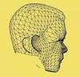

|





drcflu@gmail.com
|
|
從2010/08/04起您是第
 位訪客
位訪客
架設網站的緣起林林總總，有
人為了自己高興，有人為了思念紀念。年輕人可能著重自我表現，年長者可能想要坐擁媒體。老
師用以教學，書生為了賣書。有的用在慈善服務，有人為了競選 。就本站而言，則是一個小人物對於大環境的無限關懷，它是超越功利的，也是教學平
台，內容包括 數位藝術、實
驗美學、文化評論等審美的議題，以及都市景觀、公共藝術、教育改革等公共的話題。希望它能拋
磚引玉，引出台灣的服爾泰來一次啟蒙運動，或引發在地的福樓拜來一次情感教育。
This website reveals an ordinary
person's major concern about our environment, so
the keywords in this web are the esthetic themes
of digital art, experimental esthetics, culture
review, and the public issues of urban landscape,
public art, educational reform, etc.

|
|